Forecast season is here, and I have a complicated relationship with it. I read every PDF that lands in my inbox (not going to lie), and I also know how they're built, because every item gets the one number that makes it look good. So when the Trendalytics Womenswear Forecast for Fall/Winter 2027 arrived, with three aesthetics and 36 named colours, fabrics and key items, I ignored the moodboards for a second and asked which of those 36 are actually moving, which ones my own runway data from this season can already see, and which ones are there because the slide needed a fourth square. Also, I'd decided I'm not buying a plaid anything this year, and then I saw the riding boots on page two, so let's see how long that lasts.
Methodology, the short version
Trendalytics splits next autumn into Heritage Craft, Sensory Riot and Veiled Performance, and gives each one four colours, four fabrics or prints, three runway references and four key items, with one data point each. Those data points come in six different flavours (search volume, year on year search growth, year on year market adoption, TikTok views, growth among key influencers, and a "most saturated in luxury" label with no number), and no item gets more than one. So I sorted all 36 by the metric they share and plotted each group on the same scale, head to head, the step that found the real story in my NYFW and Paris pieces, and then checked the overlaps against my own Paris SS27 tagging, 16 houses and 997 looks. Full detail at the bottom.
What Trendalytics is forecasting, aesthetic by aesthetic
Heritage Craft: stealth wealth gets a brooch
An evolution of stealth wealth with an artisanal touch, in Trendalytics' words: brooches, riding boots, a cashmere capelet and peplum silhouettes, in russet red, plum purple, forest green and chestnut brown. The fabrics are plaid, lace, painterly florals and tweed, the runway references Chanel, Ralph Lauren and Acne Studios, and the key items Mary Jane pumps, jacquard jackets, paisley scarves and slim tailored suiting. The reasoning has three legs: a move from logos to natural fibres like cashmere and cotton, a European influence that Trendalytics ties to the EU's new ban on destroying unsold goods pushing designer stock into US off-price channels, and economic uncertainty sending people back to classics with a bookish, romantic twist.
That middle leg is a policy claim, so I checked it. The ban is real, large companies have been barred from destroying unsold clothing, accessories and footwear across the EU since 19 July 2026, with medium-sized companies following in 2030 (Just Style). Whether that stock ends up on American off-price racks is Trendalytics' reading of what happens next, not something the regulation says.
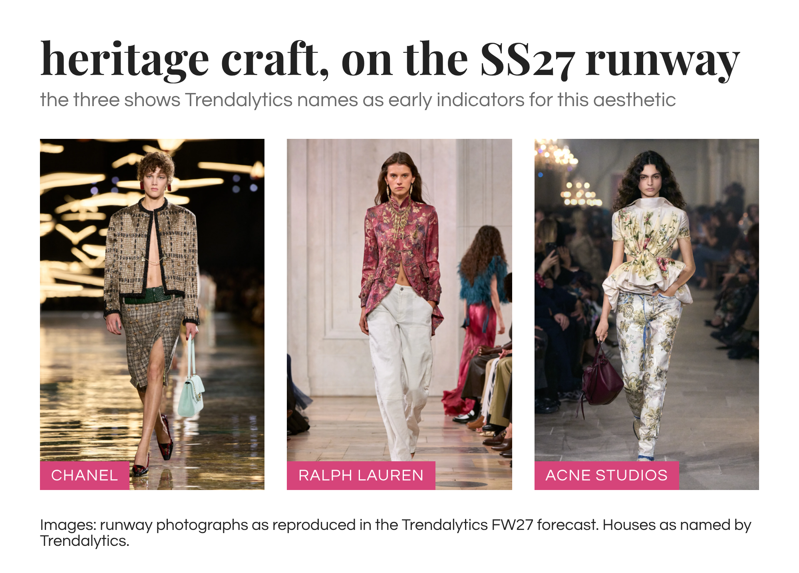
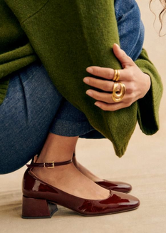
3M views on TikTok
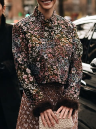
searches up 61% on last year
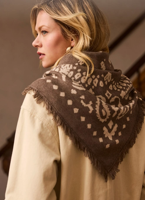
searches up 64% on last year
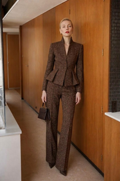
slim suits up 133% in market adoption
Sensory Riot: maximalism, again, and this time it's personal
Maximalism with bold colour, mixed prints and tactile textures, which is what I've been writing about all autumn, so I came to it with my arms crossed. The palette is chartreuse, fuchsia, lilac and cobalt blue, the fabrics feather trim, animal stripes, lustrous silk and graphic prints, the runway references Dries Van Noten, Dolce & Gabbana and Valentino, and the key items a daytime boa, a fringe skirt, sculptural wedges and embellished jeans. The reasoning: algorithms rewarding high visual impact ("dopamine decor", "printmaxxing"), a rebellion against AI-generated sameness in favour of things that look handmade, and minimalism fatigue after years of quiet luxury. Trendalytics also credits Chappell Roan, which I haven't checked and won't pretend I have.
The minimalism fatigue I can check, because it's the argument of my maximalism piece for FashionUnited: 31% of all Paris SS27 looks carried embellishment (ruffles, fringe, sequins, beading, embroidery, 3D flowers, feathers or appliqué), at every one of the 16 houses, with Dior at 70% of its looks, Chloé 69% and Isabel Marant 60%. Retail agrees, Lectra's summer 2026 assortment tracking had sequins up 40% and fringe up 34% year on year (Lectra, via FashionUnited). Two independent sources landing with Trendalytics is a stronger claim than any one alone. Where I'd push back is on fatigue meaning minimalism is leaving, because 56% of the Paris colour weight was still neutral and Lanvin, Celine and Balenciaga were three quarters neutral or more. The loud half is growing, and the quiet half hasn't gone anywhere.
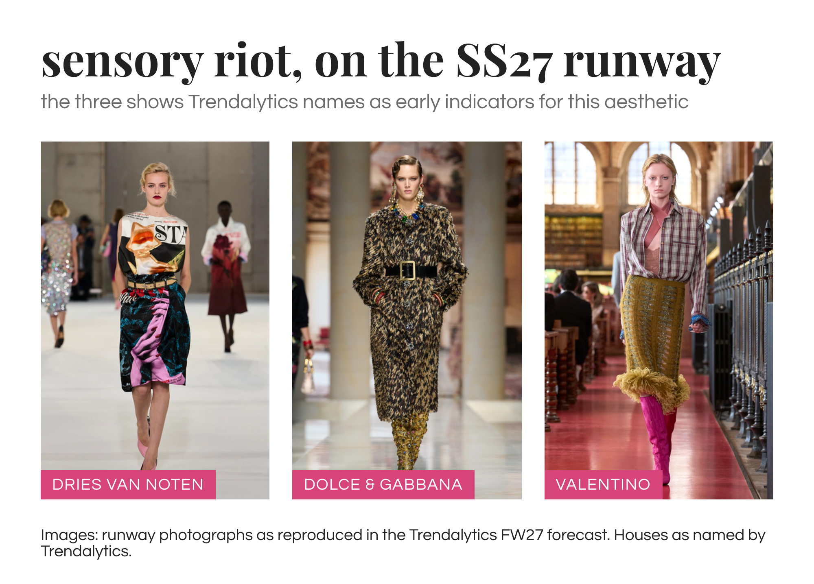
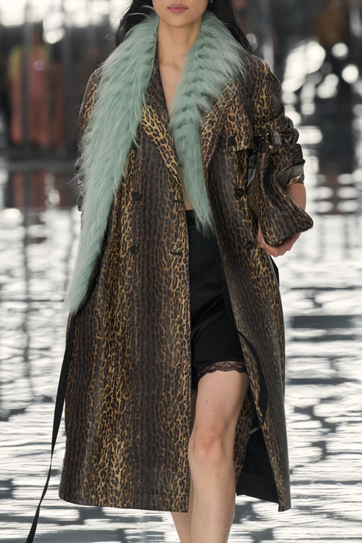
fur scarves up 30% in searches
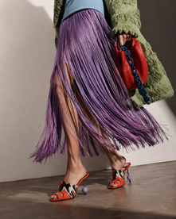
searches up 71% on last year
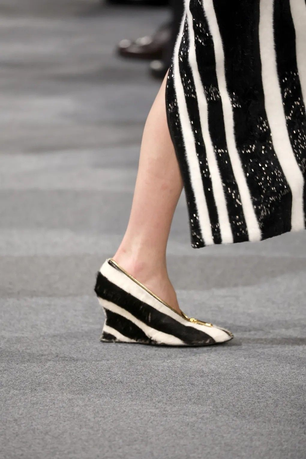
searches up 23% on last year
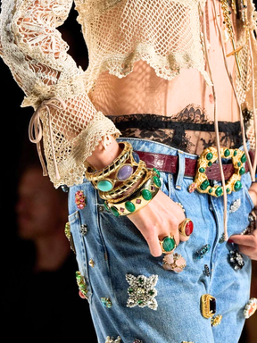
up 23% in market adoption
Veiled Performance: gorpcore grows up and brings an umbrella
Sportswear meets rugged utility and sleek functionality: sheers, hoods, balloon pants and low profile sneakers, in marigold, moss green, dove grey and terracotta. The fabrics are nylon and PVC, acid wash denim, landscape graphics and camo, the runway references Jane Wade, Chloé and Lacoste, and the key items drawstring pants, a nylon bag, a funnel neck jacket and rain boots. The reasoning: gorpcore maturing after what Trendalytics calls the sports prep peak of 2026, unpredictable weather pushing rain jackets and waterproof footwear into everyday wardrobes, and outdoor clothes as a signal of health and community.
This is where I have the least data of my own, so, upfront: nylon and technical fabric were in 4% of all Paris SS27 looks and 26% of Lacoste's, so the Lacoste reference is real but mostly one house. PVC was one house too, Chloé, on six trench coats and capes, nobody else touched it. Drawstrings, funnel necks and hoods aren't tags in my taxonomy, so I can't tell you how big they were, and I'd rather say that than make a number up.
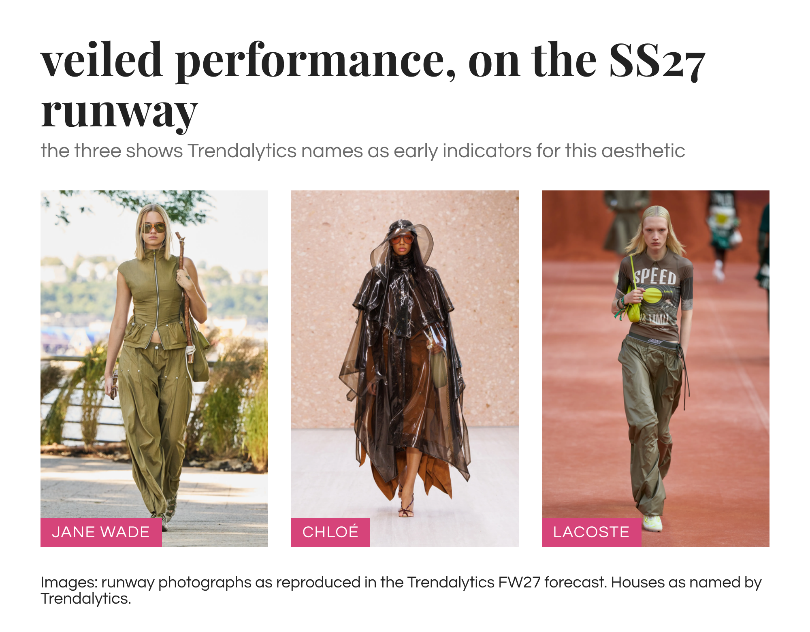

up 33% among key influencers

up 28% in market adoption

up 888% among key influencers

up 87% among key influencers
Same scale, head to head: which of the 36 are actually moving?
Ok, ok… three aesthetics, 36 items, each with a number next to it, very convincing on the page. But a +7% and a +888% sit on the same slide in the same font size, and a "high" search volume and an "extreme" one turn out to be 35k and 57k. So here's every item that shares a metric, on one scale.
Search volume: Veiled Performance owns the biggest number, and Heritage Craft the smallest
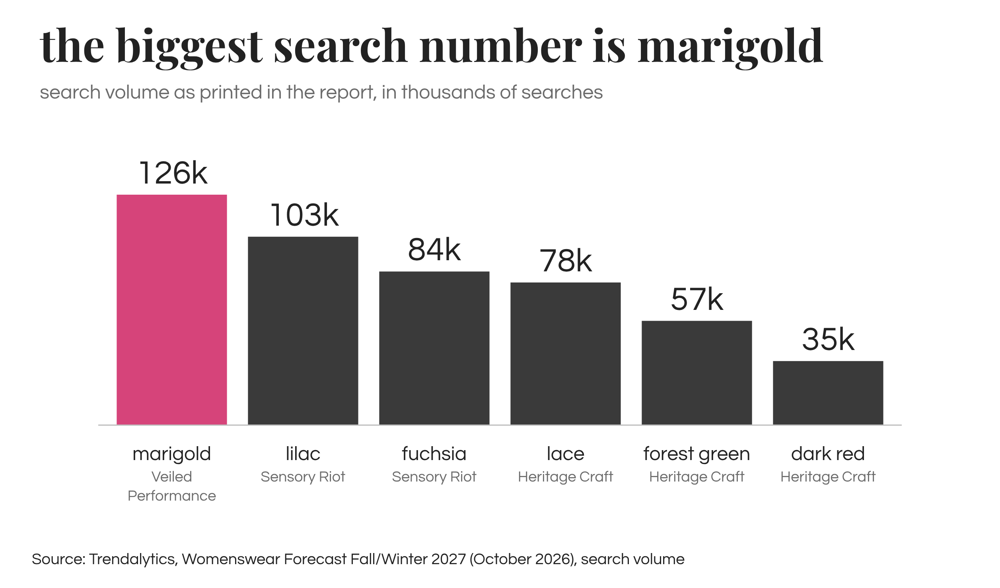
Six items come with an absolute search volume, five of them colours. Marigold, from Veiled Performance, is the biggest search number in the whole report at 126k, ahead of lilac at 103k and fuchsia at 84k (both Sensory Riot), then lace at 78k, forest green at 57k and dark red at 35k. So the two colours the Heritage Craft palette is built around sit at the bottom, and "dark red has a high search volume" is doing a lot of work for the smallest number on the chart. The report doesn't say which period or country these cover, so I'm quoting them as given.
Search growth: fringe skirts lead, and two colours barely moved
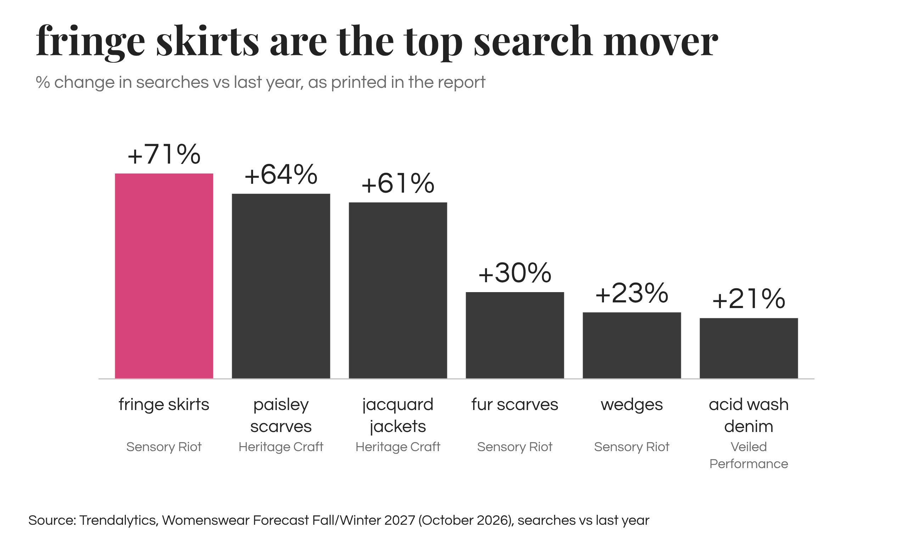
Eleven items have a year on year change in searches, and Sensory Riot and Heritage Craft take the top three between them: fringe skirts up 71%, paisley scarves 64%, jacquard jackets 61%. Then dove grey (43%), plum purple (39%), fur scarves (30%), moss green and wedges (23% each), acid wash denim (21%), cobalt blue (14%) and terracotta (7%). I'm sorry, but a colour whose searches grew 7% in a year is not a forecast, it's a colour that exists. Fringe at the top matches Heuritech in July, fringe detailing up 17% year on year with a further rise forecast for spring 2027 (Heuritech), and Lectra's summer assortments, so the fringe skirt is the one key item here with three independent sources behind it.
Market adoption: florals and slim suits are the two real jumps
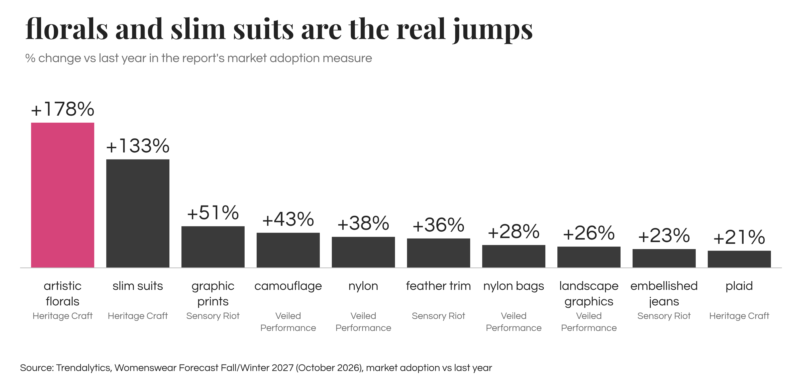
Ten items are measured by market adoption, Trendalytics' own measure of how widely the market has taken something on, and Heritage Craft wins outright: artistic florals up 178% and slim suits up 133%, with nothing close behind, graphic prints 51%, camouflage 43%, nylon 38%, feather trim 36%, nylon bags 28%, landscape graphics 26%, embellished jeans 23% and plaid 21%. Plaid, the first fabric on the Heritage Craft page, is the smallest adoption move in the report. The slim suit is the number I believe most, because Paris SS27 was a tailoring season in my data too, straight trousers in 13% of all looks and the single-breasted blazer in 11%, carried by Tom Ford, Maison Margiela, Celine and Miu Miu. One caveat, "slim" isn't a fit I tag separately, so I can confirm the suit, not the slimness.
The numbers that don't compare with anything
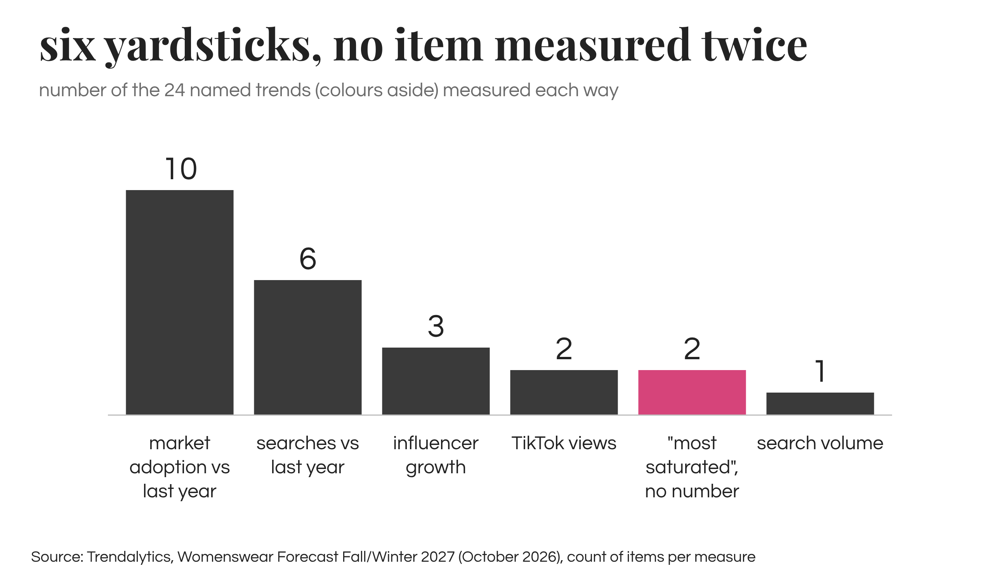
Nine items come with a metric too rare to rank. Chestnut brown has 196M TikTok views and chartreuse 149M, Mary Jane pumps 3M, and zebra print is "growing by 5M views weekly", a rate rather than a total, so it doesn't even compare with the other three. Funnel neck jackets are up 888% among key influencers, rain boots 87% and drawstring pants 33%, with no word on how many influencers or from what base, and 888% from almost nothing is exactly how a funnel neck starts to look like a movement. Tweed and silk are each "most saturated in the luxury market" with no number at all. This is my real finding: 36 items, six yardsticks, not one item measured two ways. That's how forecasts are made, not dishonesty, but it means the three aesthetics look equally strong on the page when the shared numbers say Heritage Craft and Sensory Riot are moving and Veiled Performance mostly isn't yet, marigold aside.
What my own Paris SS27 data can already see
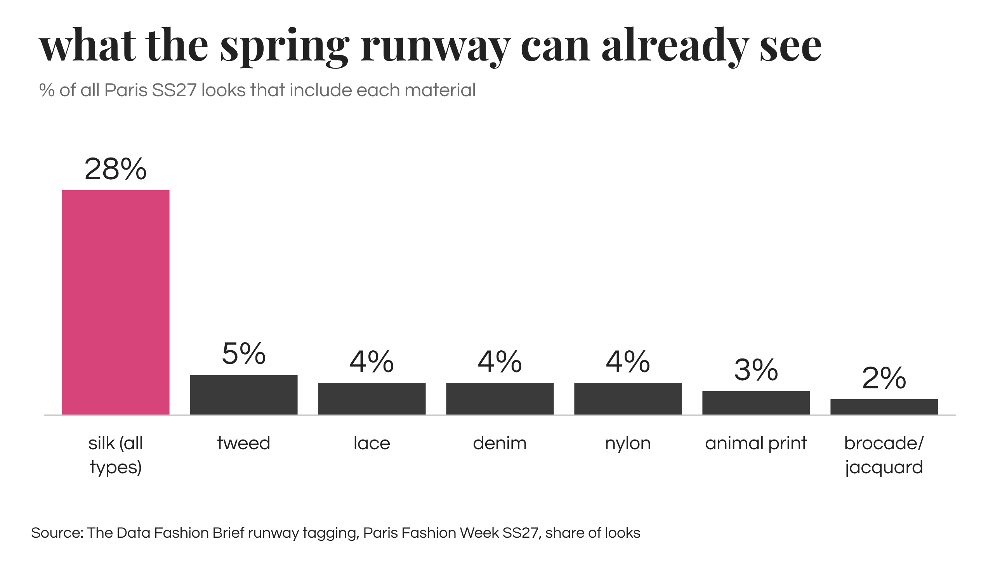
Trendalytics calls its runway references early indicators, so checking the forecast's fabrics against the SS27 runway is fair, with the caveat that it's a different season and a spring runway was never going to show much tweed. Silk is where the two sources flat out agree: most saturated fabric in luxury for Trendalytics, and in Paris the silk family was in 28% of all looks across 15 of the 16 houses. Tweed is the partial overlap, "most saturated in luxury" sounds like everyone, but in Paris it was 5% of looks and almost all Chanel, which put it in 42% of its own collection, so saturated at one house and borrowed by a couple of neighbours. Lace was 4% of looks, mostly Isabel Marant, nylon 4% and mostly Lacoste, denim 4% (I can't separate acid wash from the rest), animal print 3% with Balmain behind two thirds of it, and brocade and jacquard 2%. Plaid, feathers, camo and graphic prints have no clean material tag in my data, so they stay unchecked.
Colour, briefly


The full Paris breakdown lives in the Paris SS27 colour index, so just this: the three Trendalytics palettes are twelve colours, only two of them near neutral (dove grey and chestnut brown), against a Paris SS27 runway that was 56% neutral by colour weight. Of the forecast's colours, green was Paris's biggest actual colour at 8% (Lacoste 24% of its palette, Loewe 20%), pink was 5% but spread across 13 houses, red 2% and purple 1%. So russet red and plum purple, the two Heritage Craft anchors, were nearly absent on the spring runway, which doesn't make them wrong for autumn, it means the signal isn't coming from the runway yet. The fabric fairs are on Trendalytics' side, since Première Vision Paris built its Autumn/Winter 2027/28 season on deep purples, bordeaux and mineral neutrals (FashionUnited), the Heritage Craft palette almost exactly. Anyway, I'll do a proper FW27 colour post once I have runway data for it.